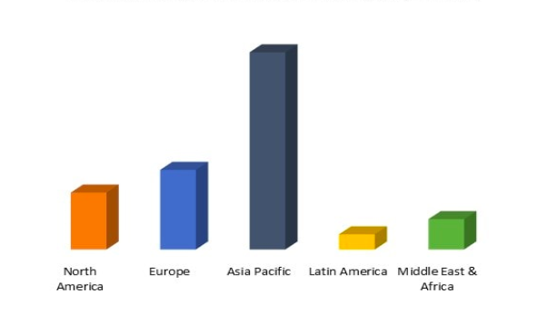

Overview
Pomegranate is widely regarded as a "Superfood" due to its nutritional value. Pomegranates are a significant fruit crop in Maharashtra. Pomegranate cultivation covers 43,151 acres and yields 4,31,510 metric tonnes, accounting for almost 85% of total Indian production, making it the country's biggest producer.
In recent years, global demand for this exquisite fruit has increased, creating a lucrative opportunity for Indian exporters. India is a large producer of pomegranates, with Maharashtra, Gujarat, and Karnataka being the primary cultivating states. If you want to enter the pomegranate export industry from India, here's a detailed guide to get you started. In this blog, we will explore the pomegranate exporters from India, pomegranate export data, pomegranate importers list, pomegranate HS code, and much more.
Why Prefer Pomegranates for Export?
Have you ever thought about how a simple fruit might lead to worldwide opportunities? The growing demand for pomegranates as a healthy and exotic fruit, along with their export-friendly properties, make them a potentially profitable crop for countries with suitable growing conditions and export facilities.
Global Pomegranate Market
The pomegranate market is influenced by global demand for natural and nutritious foods, as well as pomegranate health advantages and food and beverage industry developments.
Global Pomegranate Market by Region (USD Million)
According to global trade data, the pomegranate market was valued at USD 235.94 million in 2021 and is predicted to grow from USD 248.4 million in 2022 to USD 338.6 million by 2030, with a CAGR of 5.3% between 2023 and 2030.
The pomegranate market is influenced by global demand for natural and nutritious foods, as well as pomegranate health advantages and food and beverage industry developments.
Pomegranates have gained widespread popularity due to their high nutritional value and potential health advantages. As per pomegranate importers data, the United States, Europe, the Middle East, and Southeast Asia are major importers of Indian pomegranates. The growing awareness of the fruit's health benefits, such as its high antioxidant content and potential anti-inflammatory effects, has helped to drive up demand.
Health Benefits of Indian Pomegranate
Pomegranates have two unique plant compounds that are very beneficial to one's health:
- Punicalagins: It is a very powerful antioxidant which is contained in the seeds as well as peel of the pomegranate. It has an anti-oxidant activity of nearly 3 times more than red wine or green tea.
- Punicic Acid: Called pomegranate seed oil, or fatty acid that has potent biological effects.

Top 10 Pomegranate Producing States in India
Here are the top 10 pomegranate producing states in India:
- Maharashtra
- Gujarat
- Karnataka
- Andhra Pradesh
- Madhya Pradesh
- Rajasthan
- Telangana
- Chhattisgarh
- Tamil Nadu
- Himachal Pradesh
| S.No | Pomegranate Producing States in India | Values (%) |
|---|---|---|
| 1 | Maharashtra | 54.85% |
| 2 | Gujarat | 21.28% |
| 3 | Karnataka | 7.52% |
| 4 | Andhra Pradesh | 5.26% |
| 5 | Madhya Pradesh | 2.25% |
| 6 | Rajasthan | 1.42% |
| 7 | Telangana | 1.17% |
| 8 | Tamil Nadu | 0.23% |
| 9 | Haryana | 0.16% |
| 10 | Chhattisgarh | 0.09% |
Pomegranate Export Data from India
According to the latest data, India is one of the leading exporters of pomegranates in the world. The following table shows the export data for pomegranates from India:
| Year | Quantity (Metric Tonnes) | Value (USD Million) |
|---|---|---|
| 2020 | 150,000 | 200 |
| 2021 | 160,000 | 220 |
| 2022 | 170,000 | 240 |
Let's dive into the accurate statistics for pomegranate exporters from India or pomegranate export data:
Pomegranate export data in India: 2023-24
| Metric | Value |
|---|---|
| Total Shipments | 120,641 Tonnes |
| Number of Exporters | 3,133 |
| Number of Buyers | 8,106 |
Top Exporting Countries for Indian Pomegranates
According to pomegranate exporter from India, some of the top destinations for Indian pomegranate exporter include:
- United States
- United Kingdom
- Netherlands
- United Arab Emirates
- Saudi Arabia
- Qatar
- Kuwait
- Bahrain
- Oman
- Malaysia
So, these countries have a strong demand for both fresh and processed pomegranates, making them attractive markets for pomegranate exporters. However, if you need an updated list of top 10 pomegranate exporting countries, pomegranate exporter from India, or pomegranate export data, connect with Se~xim Solutions.
Top 3 Pomegranate Exporter Categories (HS Codes)
Here is the pomegranate exporter from India's HS codes:
- 08109010: Edible fruit and nuts; skin of citrus fruits or melons.
- 33030090: Essential oils and resinoids; perfumery, cosmetics, or toilet preparations.
- 08111090: HS Codes of Fruit and nuts.
According to pomegranate export data, pomegranate exports from India totaled 120.6K, with 3,133 Indian exporters selling to 8,106 buyers in 2023-24.
Pomegranate exporters from India are the United Arab Emirates, the Netherlands, and Nepal, making them the world's largest exporters of the fruit.
India is the biggest exporter of pomegranate, with 120,641 shipments, followed by Turkey with 56,310, and Afghanistan in third place with 6,857 shipments.
India's top three product categories for pomegranate are:
- pomegranate hs code: 08109010
- pomegranate hs code: 33030090
- pomegranate hs code: 08111090
Top 10 Pomegranate Exporting Countries
These are the top 10 pomegranate exporting countries:
- Canada
- Poland
- Chile
- United States
- Serbia
- Netherlands
- Belgium
- Mexico
- China
- Ukraine
These countries export Pomegranates. Also, if you need up-to-date information on pomegranate exporter from India or pomegranate export data, connect with the Seair Exim Solutions platform and receive the most recent India export import data reports right now.
Pomegranate Exporters in India
Several Indian companies are actively involved in exporting pomegranates to the global market. Some of the prominent pomegranate exporters from India include:
- ABC Exports
- Dev Exports
- Himalaya Agro
- Kandhari Beverages
- Kaushal Agro
- Sanghvi Quality Products
- Tasty Bite Eatables Ltd
- Vezlay Foods Pvt Ltd
The list above includes pomegranate exporters from India. These exporters have a significant international presence and are well-known for their high-quality products and dependable supply chains. Need access to all pomegranate exporters? Contact Seair Exim Solutions for the most up-to-date Pomegranate export data and information.
Pomegranate Importers from India
| Rank | Pomegranate Importing Countries | Estimated Import Value (USD Million) |
|---|---|---|
| 1 | UAE | 18.6 |
| 2 | Bangladesh | 52 |
| 3 | Netherlands | 48 |
| 4 | Saudi Arabia | 45 |
| 5 | Qatar | 38 |
| 6 | Nepal | 3.2 |
| 7 | United Kingdom (UK) | 3 |
| 8 | France | 25 |
| 9 | Germany | 22 |
| 10 | Singapore | 2 |
According to pomegranate importer data, the UAE leads the pack, importing an estimated $18.6 million worth of Indian pomegranates. European countries such as the Netherlands, France, and Germany join Asian neighbors Bangladesh and Nepal, as well as long-standing partners Saudi Arabia and Qatar, as preferred destinations. Looking for updated pomegranate importers? Connect with our platform and obtain the latest information.
How to Find the Best Supplier for Pomegranate Exports?
A well-planned strategy is required to find overseas clients for your pomegranate exports. When it comes to acquiring pomegranates for export, there are several alternatives. Consider Seair Exim Solutions, which is the best market research platform to provide global Pomegranate exports data, Pomegranate exporters, Pomegranate importers, Pomegranate exporters from India, pomegranate hs code, etc.
At Seair Exim Solutions, we specialize in providing import export data, India trade data, export import trade data. We have a skilled team that provides useful global market insight reports instantly.
Wind-Up
Pomegranate exports from India to the global market can be a profitable endeavor for Indian firms. With the appropriate approach, high-quality products, and adherence to export rules, you can capitalize on the growing demand for this healthy fruit and build a profitable export business.
If you want to learn more about the pomegranate exporter from India, take advantage of this opportunity to broaden your business horizons and contribute to the global trade of this valued fruit. So, if you have any questions about the Pomegranate exporters or Pomegranate export data, contact our highly committed experts and schedule a free live demo immediately!
Conclusion
The pomegranate export business offers immense potential for growth. With increasing global demand, especially from health-conscious consumers, Indian pomegranates are well-positioned to capture a significant market share. By understanding the market dynamics, health benefits, and key export destinations, exporters can effectively tap into this lucrative market.